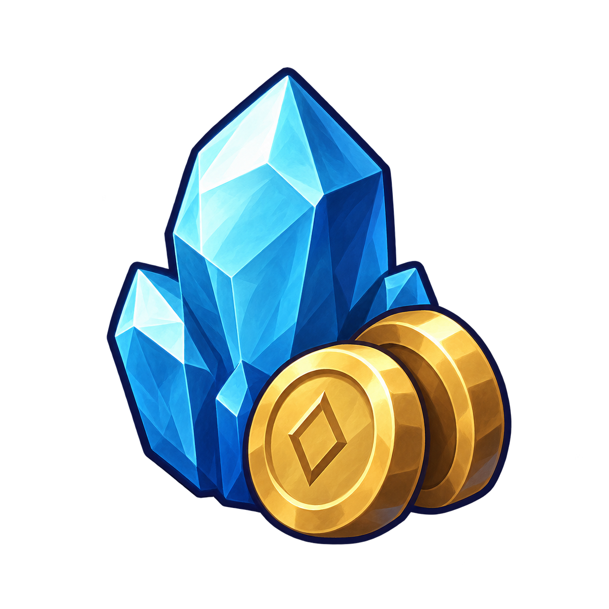

CRYPTFORGE / SANAT ÇALIŞMASI / 22.09.2026
Ödül artık yerde.
Bir kristal, iki sikke; tek toplama. Soğuk mavi XP'yi, yuvarlak pirinç yüzey altını anlatıyor. Kısa bir çekilme hareketi ödülün kahramana geçtiğini gösteriyor.
19 Eylül Unity görüntüsü üzerine tarayıcı yerleşimi. Güncel oyundan yeni bir kayıt veya telefon testi değildir. Ödüllerin konumları örnektir.
XP + altın · tek ödül

◆ XP kristali● Altın sikke
Kaynak PNG şeffaflığı korunuyor. Parlama, sayı etiketi veya sürekli zıplama yok; çevredeki düşman hareketleri öncelikli.
Telefon ölçeğinde incele
Önizleme yükleniyor…
Toplama gösterimi 0,22 saniye, kat sonu uçuşu 0,42 saniye adayı. Oyunda XP ve altın olay anında verilir; uçuşun bitmesini beklemez. Buradaki düğmeler yalnızca görsel örnekleri oynatır.
Ödül, çıkış ve final HUD planı · Üretim promptu · Kaynak ve doğrulama notları